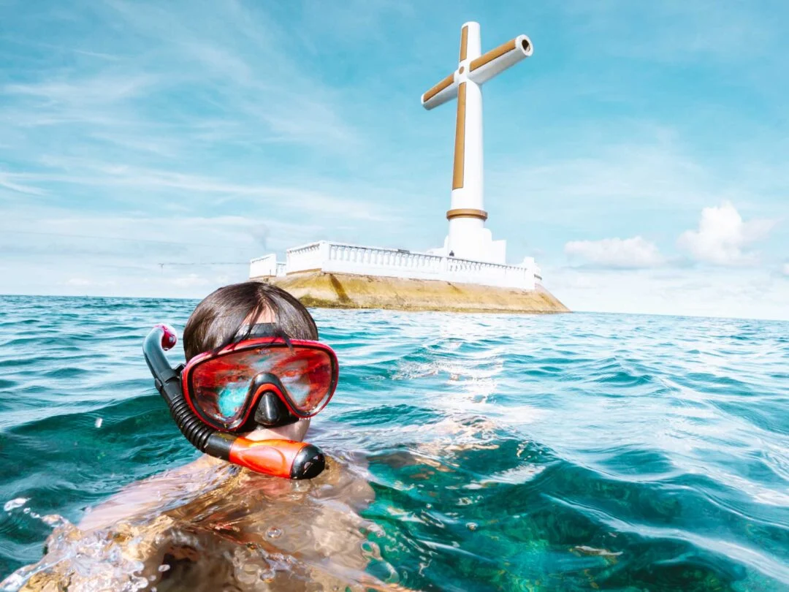

An Underwater World Awaits
Camiguin's underwater environment is one of the most diverse and well-preserved in the Philippines. The waters surrounding the island are home to thriving coral reefs, an abundance of fish species, sea turtles, and unique dive sites that cannot be found anywhere else in the world — most notably the Sunken Cemetery, where centuries-old grave markers now rest beneath a vibrant coral ecosystem.
Whether you are a seasoned diver or a first-time snorkeler, Camiguin offers accessible and awe-inspiring underwater experiences. Several dive shops operate on the island and offer equipment rental, guided dives, and PADI certification courses for beginners.


Top Dive Sites
The Sunken Cemetery, Jigdup Reef, and the Medina Fish Sanctuary are among the most celebrated dive sites, each offering unique underwater landscapes and rich marine biodiversity.
Marine Life
Expect to encounter clownfish, sea turtles, moray eels, lionfish, and vast schools of fusiliers. The reefs around Camiguin are in excellent condition due to strong local conservation efforts.
For Beginners
Several accredited dive shops offer introductory dives and PADI open water certification courses. Snorkeling is available at many sites with no experience required.